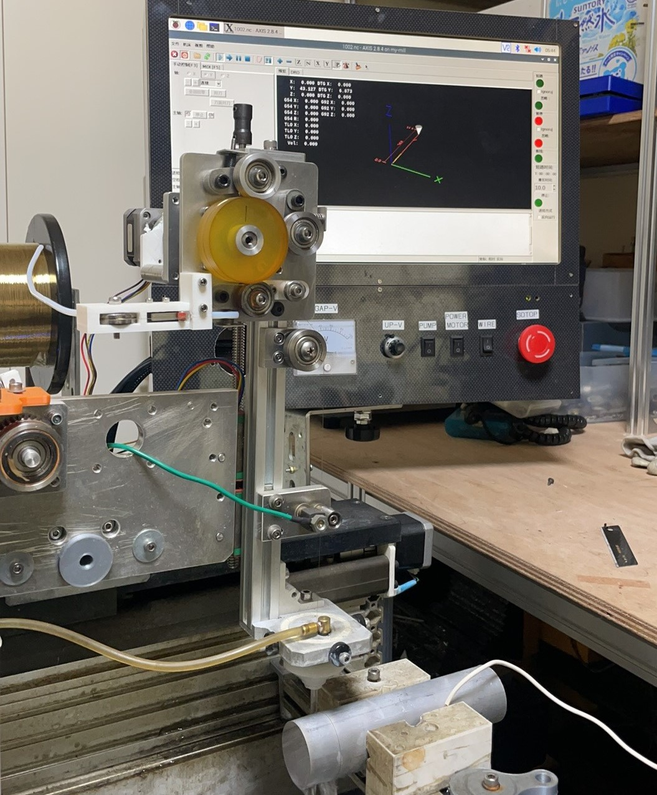
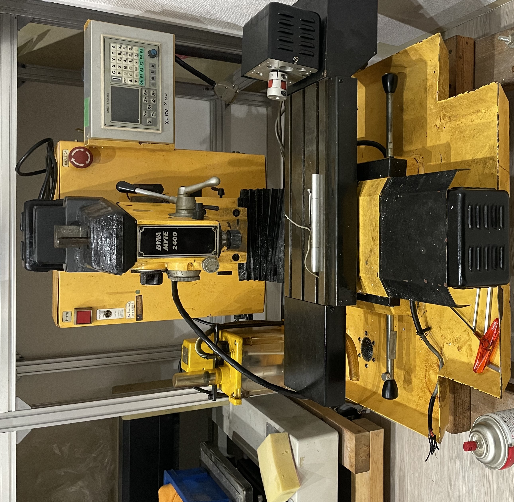
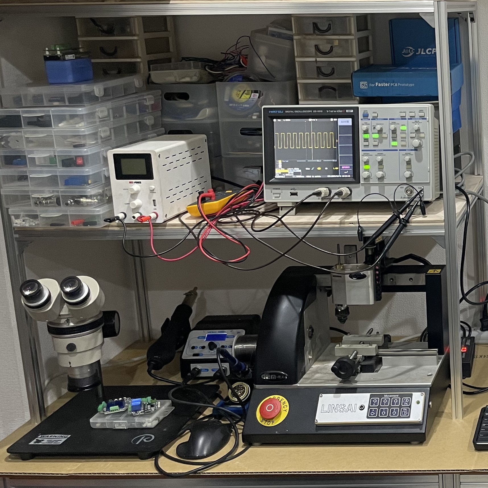

事業の概要
「作りたい」を実現する技術を、手のひらに。
LINSAIは、2016年に東京で創業しました。私たちは「オープンでアクセスしやすい工作技術」を基盤に、卓上CNC加工機や放電加工機、射出成形機などの開発・販売に取り組んでいます。創業以来、技術者・クリエイターが「作りたい」を実現できる環境づくりを支援しています。
現在、私たちの会社は2つの事業で成り立っています。一つは、小型工作機械を中心とした「オリジナル製品事業」。もう一つは、生産設備の保守・運用を支える「FA部品リユース・機械アップグレード事業」です。
オリジナル製品事業
小型CNC加工機・EDM機の開発・レーザー加工機・販売
Powercoreシリーズをはじめとする卓上CNC加工機・放電加工機は、コンパクトながら業務用に匹敵する精度と剛性と静音設計を実現。大学研究室、試作開発現場、個人クリエイターまで幅広く活用されています。完全オープンソースのEDM電源「Powercore V3」は、ワイヤー放電加工を自宅で可能にした革新的な製品です。

成形機と金型加工
成形機は、手のひらサイズの金型で少量試作を可能にします。CNCフライス「DM2400」と組み合わせれば、金型製作から成形までを自社で完結。サステナブル素材の成形テストや小ロット生産に最適です。

- 主な導入先 / 活用事例
- ・研究室
- ・試作部門、開発チーム
- ・個人クリエイターによるジュエリー製作、模型製作
FA部品リユース・機械アップグレード事業
生産設備の保守・メンテナンスに欠かせない、モーションコントローラ、サーボモータ、センサなどを中心に、厳選した中古部品を販売。メーカー生産終了品の入手困難・設備停止リスクを解決します。
品質へのこだわり
すべての製品は専用ソフトウェアとマニュアルに基づく動作確認を実施。10年以上の経験に基づくノウハウで、担当者によらない高い検査品質を維持しています。

中古NC機械のアップグレード・改造・保守
旧式NC工作機械の制御基板を最新のものに交換（リトラフィット）することで、機械の寿命を延ばし、生産性を向上させます。また、生産終了となった電子部品・基板の設計・加工を承ります。お客様の設備を長く使い続けるためのトータルサポートを提供します。